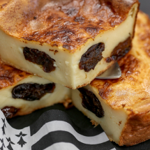

 Far Breton is a custard-like cake, to which prunes are added.
This dessert of tasting children, or sweet sweets of our grandmothers at tea time, eat without hunger. some even like it for breakfast.
The word far comes from Breton "farz forn" which means far baked and from the Latin "spelled" or preparation based on cereals. You will understand that our Breton specialty of the week consists mainly of wheat flour and is baked!
The origin of far Breton dates back to the eighteenth century according to the writings. Basically it was a porridge that was cooked in a bag and served salted as a side dish with the meat. Then the recipe evolved, it was eaten sweet and sometimes with dried fruits, usually prunes.
Why the prune when it is not a Breton product?
Because Bretons are traditionally a seafaring people. Prunes were used extensively in these communities because they are easy to keep and are a great nutritional asset to keep going on a long trip.
In addition to the usual ingredients, Far Breton is very popular when it is accompanied by raisins and especially prunes. To add them to the basic recipe, it is advisable to marinate them in lukewarm water while making the far Breton preparation.
For a matter of tastes and preferences, many people add rum, which is usually used to marinate dried fruits and flavor the meal. Instead of rum, it is possible to use calvados. Some people do not like raisins or prunes. For them, it is possible to use apples instead of these fruits.